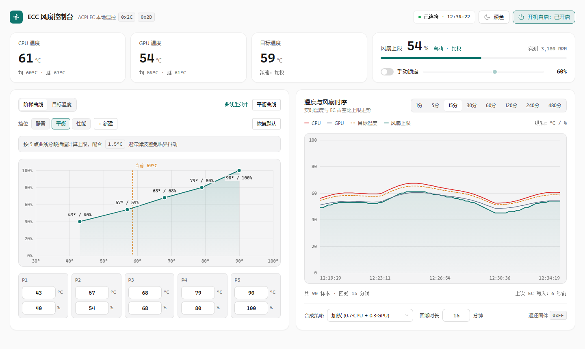

微软 WHCP 签名内核驱动
默认集成 PawnIO 2.x 驱动与 LpcACPIEC.bin 模块，兼容 Windows 11 核心隔离与内存完整性（HVCI），不再依赖易被拦截的 WinRing0。
面向蓝天与神舟模具的本地风扇控制器。支持 5 点阶梯曲线、闭环目标温控与 30 秒独立看门狗，单文件离线运行，无需关闭 Windows 内存完整性。

从签名内核驱动到应用层闭环算法，所有读写都在本地完成，异常时自动退还主板固件控制权。
默认集成 PawnIO 2.x 驱动与 LpcACPIEC.bin 模块，兼容 Windows 11 核心隔离与内存完整性（HVCI），不再依赖易被拦截的 WinRing0。
基于比例控制律、动态死区与非对称升降速率限制，设定如 66°C 后自动微调风扇上限，升温放开快、降温收紧慢，减少转速来回拉扯。
5 个温度—转速控制点分段线性插值，支持画布直接拖拽或输入框精确键入，内置单调递增约束，防止节点交叉。
左侧曲线与挡位调控、右侧 1–480 分钟自适应抽样时序图，顶部集成实时遥测与手动锁定滑块，单屏即可完成常用操作。
主程序启动时同步拉起独立看门狗。若主进程崩溃、死锁或被强制结束，30 秒无心跳即向 EC 写入 0xFF 交还主板固件控制。
检测原厂 ControlCenter 的 FanControlStatus，原厂接管时主动让渡；CPU ≥ 92°C 或 GPU ≥ 87°C 强制交还主板全速散热。
每秒读取一次传感器温度，经平滑滤波、策略合成与门控判断后写入 EC 寄存器，并回读实际占空比核验。
常驻子进程桥接 LibreHardwareMonitor 与 GmwmiCli 只读采集 CPU 与 GPU 温度，失败时指数退避重启。
按加权（0.7·CPU + 0.3·GPU）、最大值或单路通道合成目标温度，每周期 6 次采样取算术均值以滤除瞬时毛刺。
曲线模式执行 5 点分段插值；目标模式按偏离误差与 KP 比例调节，并受 Min/Max 范围与步长限制约束。
1.5°C 迟滞过滤微小抖动，10s 心跳防止固件收回控制，高温硬保护阈值具备最高优先级。
经 WHCP 签名 PawnIO 写入 0x2C / 0x2D，同步读取 0x2E / 0x2F 与 RPM 确认生效。
| 寄存器地址 | 物理功能 | 读写属性 | 数值规范与说明 |
|---|---|---|---|
| 0x2C 0x2D | CPU / GPU 风扇占空比上限 | 读写 | 写入 0x00–0x64（0–100%）设定上限；写入 0xFF 立即交还主板固件自动曲线 |
| 0x2E 0x2F | EC 实际调控占空比 | 只读 | 主板硬件当前执行的 PWM 占空比，EC 通常以约 10 秒阻尼平滑逼近设定上限 |
| 0x58 0x59 | CPU / 扩展传感器温度 | 只读 | EC 读取到的摄氏度整数，用于高温保护比对与传感器回退核验 |
| 0xB0 0xB1 | Fan 1 实际转速（RPM） | 只读 | 小端 16 位无符号整数（低字节 0xB0，高字节 0xB1） |
| 0xB2 0xB3 | Fan 2 实际转速（RPM） | 只读 | 小端 16 位无符号整数（低字节 0xB2，高字节 0xB3） |
按办公静音、游戏稳温或临时强冷需求切换，所有模式均受高温硬保护兜底。
基于 5 个自定义控制点做分段线性插值，温度与转速对应关系直接透明。
比例控制律结合死区滤波与非对称步长限制，自动微调风扇上限以维持设定温度。
desired = Bias + KP × (avg - Target)UpStep +30%、DownStep -10%直接写入固定风扇占空比上限，绕过曲线与闭环计算。
提供自动配置驱动与计划任务的 Windows 安装包，以及适合调试的便携版 ZIP。
内置静默安装 PawnIO 驱动逻辑与受保护目录计划任务，支持原地覆盖升级与标准卸载。
ECC-Setup-v2.0.0.exe%ProgramFiles%\ECC适合源码编译、排障测试或自定义目录部署，所有依赖随目录分发。
ecc-v2.0.0-windows-amd64.zip 并解压至固定目录assets/pawnio/PawnIO_setup.exe 确保系统已安装 PawnIOinstall.ps1 或直接启动 ecc.exehttp://127.0.0.1:8765主程序 ecc.exe 支持用于端口配置、模拟演练与静默退出的启动标志。
| 参数 | 默认值 | 说明 |
|---|---|---|
--port |
8765 |
Web 控制台监听端口，仅绑定 127.0.0.1 回环地址 |
--interval |
1000 |
温度传感器采样间隔（毫秒） |
--dry-run |
false |
仅记录计算结果与写入日志，不操作真实 EC 硬件 |
--simulate |
false |
使用内置模拟温度源测试界面联动（自动启用 dry-run） |
--no-pawnio |
false |
禁用默认 PawnIO 后端，回退至 ec-probe / WinRing0 路径 |
--no-tray |
false |
禁用 Windows 系统托盘图标 |
--no-browser |
false |
启动就绪后不自动打开浏览器 |
--skip-admin |
false |
跳过管理员权限检查，配合模拟模式调试使用 |
--shutdown |
false |
通过本地 IPC 通知后台运行中的实例优雅退出 |
关于驱动签名、安全机制、硬件兼容性与本地隐私的说明。
不需要。v2.0.0 默认采用微软 WHCP 签名的 PawnIO 2.x 驱动读写 EC 寄存器，可在开启核心隔离与内存完整性的环境下正常运行。
当通过安装包部署在受保护的 C:\Program Files\ECC 目录时，自启任务使用计划任务的 HIGHEST 权限静默启动，免去每次登录确认 UAC。若运行于非受保护目录，则仅创建普通用户任务并在启动时请求 UAC，避免非受保护路径的高权限提权风险。
不会。ECC 内置三层保护机制：
在蓝天与神舟模具中，0x2C / 0x2D 表示风扇占空比上限（Speed Cap）。ECC 可压低风扇上限以降低噪音，但如果主板固件自身规则要求更高转速，硬件不会低于固件安全底线。同时 DownStep 速率限制会让降速按步进平稳收紧。
当前已在神舟 Hasee QNLXS（i7-12650H + RTX 4060，BIOS SQ131）实机验证，适用于寄存器布局一致的蓝天（Clevo）及同方模具机型。未知机型请先使用 --simulate 或 --dry-run 测试，并在管理员终端核验对应寄存器后再实际接管。
不会。ECC 是纯本地离线开源工具，不含任何网络请求或遥测上报。Web 控制台仅监听 127.0.0.1，并启用页面 Session Token 与 Host 白名单防跨站请求。